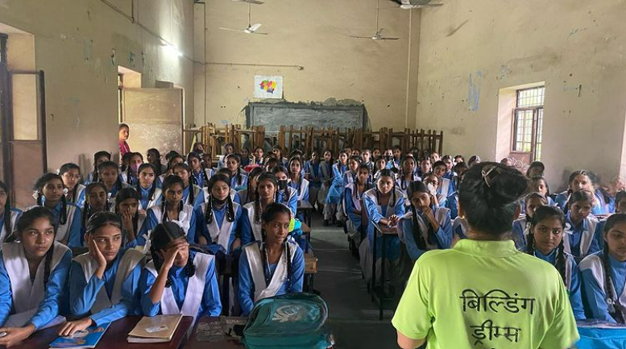
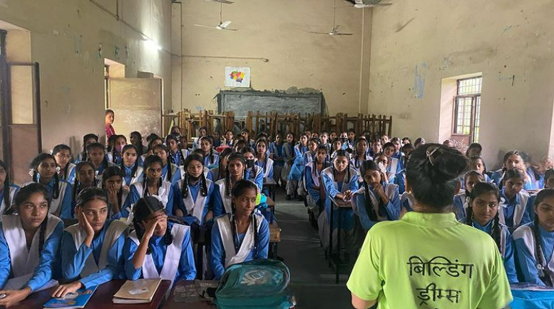

Distribution drives are a way to provide support and resources to those who are experiencing homelessness
and poverty. These drives involve collecting and distributing essential items such as clothing, food, and
hygiene products to individuals and communities in need. The goal of these drives is to alleviate some of
the immediate challenges faced by those experiencing homelessness and poverty, such as lack of access to
basic necessities. These drives are often organized by our NGO
to not only provide physical assistance but
also hope and support for the people in need. They are a way to show that people care and are willing to
help.
Winter Donation Drive
30/12/22
Sambhav Foundation witnessed it's “Winter Donation drive” with bdf ngo.
Clothes collected have been donated in the slums areas of Bhauwala,Dehradun.
These drives can be tailored to specific needs, such as providing warm clothing for the winter or
distributing school supplies for children. The items collected and distributed can also be new or gently used,
as long as they are in good condition. Distribution drives not only provide immediate assistance but also raise
awareness about the issue of homelessness and poverty, and the importance of community support. Overall, they
are an effective way to make a meaningful difference in the lives of those experiencing hardship and show that
no one should have to face these challenges alone.
Sanitary Pads distribution drive
23/09/22
Sanitary pads distribution drive sgrr inter college sahaspur with Building dreams foundation.
Beautiful initiative by Building Dreams Foundation.
Sanitary pad distribution programs focus on education and awareness about menstrual hygiene, as well as
breaking taboos and stigmas surrounding menstruation. It is a significant issue in many developing countries,
but also concern in developed countries where period poverty is still a reality. Providing access to sanitary
pads can promote better health and education outcomes for individuals, particularly girls and women.
National Student Day
03/10/21
On the occasion of National Student's Day , Sambhav foundation with the Saksham group of SGRR college conducted
a distribution activity at bdf ngo where the students were given stationary itmes and fruits. The members
encouraged the students by their speechs and motivated them to do great in their lives.
The session also
included some fun activities like singing and dancing.
National Students Day is a day that is observed to recognize and celebrate the achievements and contributions of
students in a country. National Students Day is an opportunity to acknowledge the hard work and dedication of
students and to
encourage them to continue to strive for excellence in their studies.
Clothes Distribution Drive
15/01/22
On 15 Jan,Sambhav Foundation organised it's first activity of this 2022.
It was a successful clothes
distribution activity where team members took active participation.Keeping in mind weather in our city ,warm
clothes were first collected and then disturbed amongst needy ones.
 
